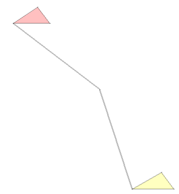

|
The WSA employs many programmers, who perform a bit better or a bit worse each day. This results in higher or lower quality code accordingly. The management understands the importance of high quality code (especially in such a security-sensitive domain!), therefore they decided to optimize the processes of the WSA software department. The first step of the effort was to send a few managers to understand the nature of the problems. The programmers had shown thousands of lines of source code, written in various languages the managers had never seen before. They had a hard time trying to understand all this, and after weeks of evaluation, they figured out why: most programming languages are too complicated! They concluded that they must design a new programming language that is much simpler, and mandate its use within the organization. |

Almost accurate visualisation of the example program (0.pp) for this task |
They came up with something more visual (thus user friendly) and vastly simpler (it has only two different constructions and only one kind of instruction). Programmers were initially sceptical of the practicability of these ideas, so WSA management has hired you to prove the merits of the language by implementing certain example algorithms.
This problem is so large it's split in two separate problems: first you should write and test your toolchain for dealing with polyprog programs, then (using your brand new tools) you can attempt to create the example programs.
Polyprog programs are represented by a list of polygons and lines. Color is specified in 32 bit RGBA (each component is an integer between 0 and 255). Coordinates are unsigned 16 bit integer x;y pairs. A polygon has a fill color, a stroke color, and at least 3 vertices specified by their coordinates. A line is a color and an ordered list of points (coordinates); the end points are the first and last points on the list.
To keep source code clean and readable:
Limits: DIM=65536 and LLEN=16.
A = (Y + B + C * D + Register[F]) * (255-X) / ( (255-T) + E ) + Zand update A accordingly. Register values and constants are converted to 32 bit unsigned integers for the calculation; at the end, the result is truncated back to a 16 bit unsigned integer. (Thus, operations are evaluated modulo 232, division is integer division with non-negative operands, a zero second operand is fatal error and the final result modulo 216 is stored in A.)
Register[F] means the lower 4 bits of the value in F selects which register's value is substituted (the higher 4 bits are ignored).
SIO data is an unsigned 8 bit integer placed in the least significant 8 bits of the register, leaving the upper 8 bits 0:
MSB LSB 15 0 0 0 0 0 0 0 0 0 d d d d d d d dInput EOF is a word with value 256:
MSB LSB 15 0 0 0 0 0 0 0 0 1 0 0 0 0 0 0 0 0Output EOF is a word with value >255: at least one of the z bits is 1. (In this case, x bits are ignored.)
MSB LSB 15 0 z z z z z z z z x x x x x x x x
A polygon description starts with 4 integers SR, SG, SB, SA for the stroke color components, then 4 integers FR, FG, FB, SB for the fill color components and an integer C, number of vertices. The rest of the line is a space separated list of X space Y coordinates of the vertices in CW or CCW order.
A line entry starts with 4 integers R, B, G and A for the color of the line, followed by integer P (the number of points) and list of X space Y coordinates giving the points of the line. P is limited to: 2 <= P <= LLEN.
This task is provided as an aid for developing your own toolchain, especially an interpreter, to develop, run and debug polyprogs. Please make sure you solve all inputs of this task before trying to solve the next problem.
Any new implementation of polyprog compilers and interpreters must comply with the standard described above. Verification is possible using the reference programs the Managers have provided. An implementor should run all five reference programs and compare the output to the reference outputs. Unfortunately the reference output of these programs is the Intellectual Property of the WSA, but the managers are willing to compare your output to the references and tell if they match.
You need to run five polyprog programs. A reference serial input, serial.in.bin is also provided; before running a reference program, the SIO's read pointer should be reset to the beginning of this file. Note: serial.in.bin is a binary file.
The output as written by the program on the SIO. Output files are binary, but never contain the \0 (nil) character. If your interpreter outputs \0 executing any of the reference programs, it is broken.
2 1 0 0 0 254 47 0 0 254 3 100 100 110 110 80 110 0 0 0 254 255 18 0 254 3 200 200 210 210 176 210 0 0 0 1 3 80 110 150 150 176 210
("The Input stream contains pairs of 7-bit unsigned integers in binary format; sum each pair and print the result to the output as 8-bit unsigned int in binary format. The program shall stop when EOF is read on the input stream. If the input stream contains an odd number of bytes, ignore the last byte.")
D3 D1 D5